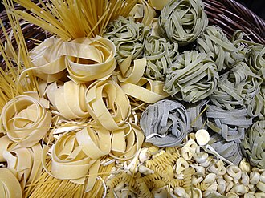
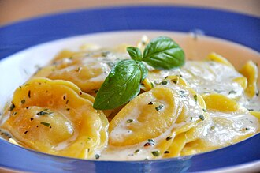

Welcome to Pasta Explorer
Welcome to our college mini-project website! Pasta is one of the most popular and comforting foods in the world. On this website, you can read about the history of how pasta started, browse different pasta shapes and categories, and learn simple step-by-step pasta recipes that anyone can cook at home.

Explore Pasta
Featured Pasta
Here are three of the most well-known pasta varieties:

Spaghetti
Long, thin cylindrical pasta strands. It is the most famous pasta shape and pairs well with tomato sauce.

Penne
Short tube-shaped pasta cut at an angle on both ends. Great for holding thick sauces like Arrabbiata.

Ravioli
Square pasta pillows stuffed with cheese, vegetables, or meat and served with light sauce or broth.
What You Can Find on This Website
- History: Learn what pasta is, how it developed in Italy, and how it spread across the world.
- Pasta Types: Browse 16 popular pasta varieties divided into Long, Short, Stuffed, Tube, and Soup pasta.
- Recipes: Follow 8 basic recipes with ingredients lists and simple cooking steps.